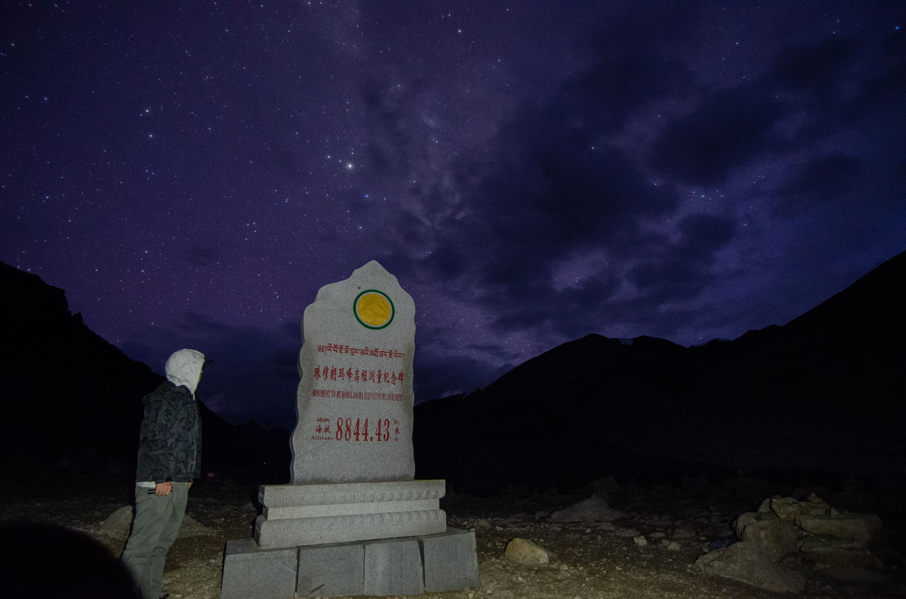
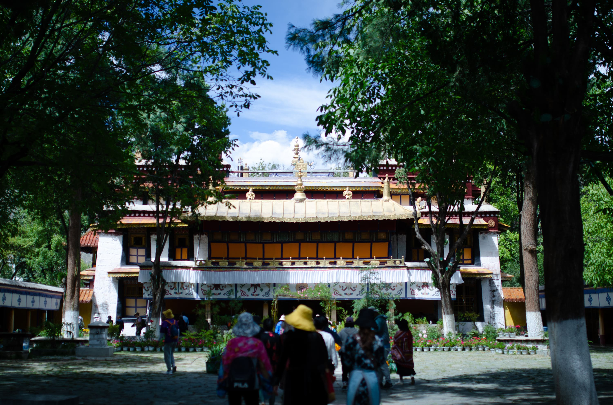

前言
2019年8月底，趁着休假，考虑出去玩一圈，最开计划是去日本，但是因为签证问题，可能时间上不太够，最后改变计划去了西藏~
准备工作
- 常用的应急药品及物品：比如胃药，退烧药，vc泡腾片，创口贴，碘伏消毒液等等
- 衣服：西藏地区温差较大，建议备夏秋装，可以多带几件秋装，冷的话多套几件，最好带一件防风防雨的冲锋衣
- 设备：尼康相机，大疆无人机，手电筒，三脚架等，这个看需求
- 预防高反：这个真的没什么多说的，其实和身体素质没有太大的关系，更多的是心理上斗争。对于预防高反的药物，如何红景天和高原灵之类的强烈不建议买，作用为零，都是心理安慰。
高原旅行的建议
- 害怕高反可以现在低海拔地区适应几天，如拉萨或者林芝。
- 千万不要感冒或者发烧！千万不要感冒或者发烧！千万不要感冒或者发烧！重要的事情说三遍，有感冒或者发烧一定要去休息或者看医生。
- 尽量不要剧烈运动
用药指南
- 尽量别乱吃药或者依赖吸氧，有头疼脑涨的情况属于正常现象。
拉萨 · 布达拉宫
夜晚的布达拉宫，庄重又神秘
纳木措
DJI nb
圣象天门（力推）
如果有机会和老西藏们聊聊天，就会从他们口中得知一个神秘的去处——“圣象天门”。它静静藏匿与纳木错的北岸，隔着圣湖与神山念青唐古拉对望。这是老西藏心中深藏的天边秘境，也是西藏美景的终极之地。
美到爆炸，当时我在开车，翻越过一个山头后，面前的纳木措在眼前一览无遗。
哇，这TM也太好看了吧
羊卓雍措（力推）
日喀则
- 小旅店墙上可以涂涂写写，随手拍了一张
- 在日喀则停留了一晚，第二天早上办了边防证就出发珠峰大本营了
珠峰大本营
七十二拐
8844

第二天天气不好，并没有看到珠峰。
拉萨
雪顿节
雪顿节是西藏、青海、甘肃、四川、云南等省、区藏族人民的民族节日，国家级非物质文化遗产之一。
“雪顿”意为酸奶宴。在藏语中，“雪”是酸奶子的意思，“顿”是“吃”“宴”的意思，雪顿节按藏语解释就是吃酸奶子的节日。因为雪顿节期间有藏戏演出和晒佛仪式，所以有人也称之为“藏戏节”、“展佛节”。
感觉小女孩很可爱，得到妈妈的同意，拍的一张照片

雪顿节，当地人会聚集在公园，一起吃吃喝喝，我们还蹭到了牛肉干吃~
总结
- 这次旅程还是很开心的~时间上可能比较紧，但还是蛮充实的。
- 本身这次没有计划去珠峰大本营，但是一时兴起，还是开车几百公里去打卡了
- 过程中认识了很多朋友，在我写这篇文章的时候，认识的朋友又去了西藏，有机会我肯定还会去的，下次会把节奏放慢。
- 力推圣象天门和羊湖，真的很美，沿途的风景也值得停车，拍拍照片。
- 网络情况，我是移动卡，大部分时间信号还是不错的，如果对网络要求高的，建议使用电信卡，信号会更好一些，当然了，如果家里有条件的话，可以带三个手机三张卡~
- 最最最重要的事就是安全问题啦，因为我们是自驾，每个景点又距离很远，建议一辆车最好有两个会开车的，轮流开。开车途中和大车保持安全距离，一路上会有很多大车，路况整体来说还是不错的~
坑
- 收费很混乱，有不少乱收费的现象，遵循一个原则，没票的话建议不要给。（强行收，建议报警）不过你要是自驾的话要在某个地方露营，有可能收卫生费，价格不高可以给的。
- 纳木措的扎西半岛和珠峰大本营建议不要去，商业化严重，也没什么看的，收费也是坑的不行，跟团还好，自驾的话强烈不推荐去珠峰大本营！
- 因为我们去拉萨的时候，正好赶上雪顿节，在外面吃饭的时候，会不断的有人来要钱，你不给的话，就赖着不走，这事我是真的生气了，差点打人，一个人要我也就算了，一会来一个，这就太过分了。